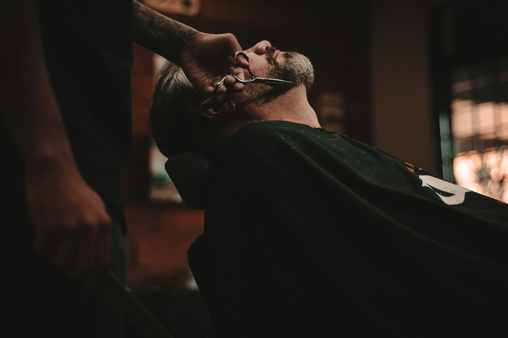
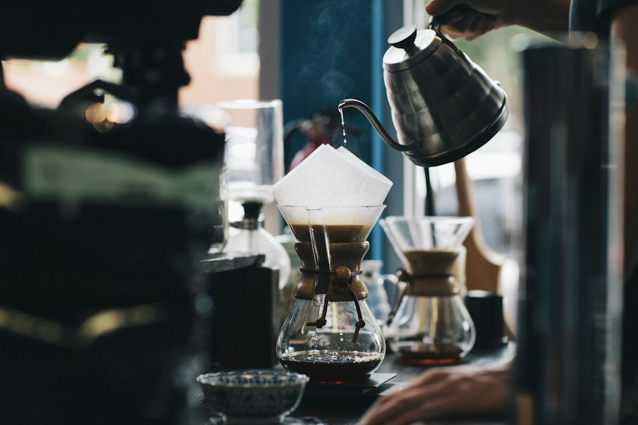

FORM & FIELDSPACES / OUR STORY / CONTACT
A place
to belong.
to belong.
CONSIDERED SPACES. EVERYDAY BEAUTY.EXPLORE ↗
THE DAILY POURCOFFEE / COMMUNITY
Stay
a little.
a little.

GOOD COFFEE. BETTER COMPANY.COME ON IN ↗
YOUR BUSINESS. YOUR WORLD. YOUR WEBSITE.EXPLORE THE POSSIBILITIES ↓
Whatever you do,
make it look like you.
A fresh start for your business. A new home for your ideas. Explore a design, then make it your own.
Find your starting point ↗↗
FORM & FIELDSPACES / OUR STORY / CONTACT
A place
to belong.
to belong.
CONSIDERED SPACES. EVERYDAY BEAUTY.EXPLORE ↗
Form & Field
INTERIORS · DESIGN · CREATIVE STUDIOSTHE DAILY POURCOFFEE / COMMUNITY
Stay
a little.
a little.
GOOD COFFEE. BETTER COMPANY.COME ON IN ↗
The Daily Pour
CAFÉS · HOSPITALITY · INDEPENDENT SHOPSOriginal design concepts. Your finished website will be built around your business.
CREATIVE CONTROL, FROM THE FIRST CLICKDon’t just
Don’t just
imagine it.
Try it.
Your name. Your colours. Your own point of view. Play with the details and watch your website idea take shape.
BUILD YOUR OWN ↗No sign-up. No blank-page pressure.FORM & FIELDSPACES / OUR STORY / CONTACT
A place
to belong.
to belong.
CONSIDERED SPACES. EVERYDAY BEAUTY.EXPLORE ↗
A COLOUR STORY
Make it feel like you.
SET THE TONEAaAaLittle changes. A different feeling.
01 CHOOSE A STARTING POINT02 MAKE IT YOUR OWN03 BRING YOUR DESIGN TO US
UNI-TECH / INDEPENDENT WEBSITE DESIGNYour vision.
Your vision.
Our attention to detail.
We’re a small team in Kent & East Sussex, creating websites for businesses with something of their own to offer. You bring the idea. We help you find the right way to share it.
Start with a conversation.
Tell us about your business, or send us your playground design. We’ll talk through what you need and agree the scope and price.
Build something that fits.
Thoughtful design, clear content and a website that works across screens. You’ll have room to review and refine as it comes together.
Take your next step online.
We check the details, guide you through launch and discuss the care your website needs as your business grows.
A few things
you might be wondering.
Do I build the whole website myself?+
The playground helps you explore a look and create a design brief. Uni-Tech then works with you to design, build and launch your finished website. The preview doesn’t publish a site.
How much does a website cost?+
It depends on the pages, content and features you need. We’ll agree the scope and price with you before work begins.
Can you redesign my existing website?+
Yes. Share your current website and what you’d like to improve, and we’ll talk through a refresh or a rebuild.
What if I haven’t got everything ready?+
You don’t need all the answers to start. We can talk through your ideas, what you already have and what’s needed to bring the project together.